Advanced course #1
Romain Cancilliere
Ignore files
Tell Git to not take account of specific files and/or folders (locally or globally)
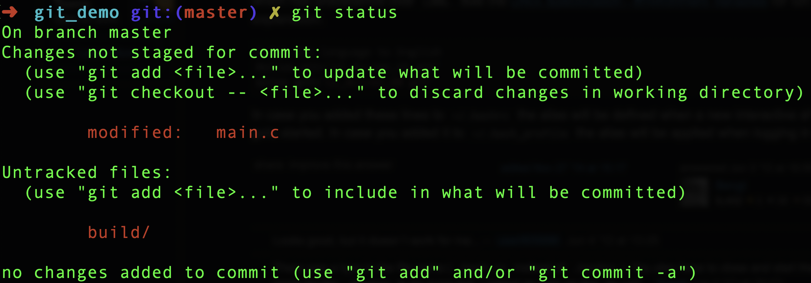Globally (for all users)
Edit .gitignore (if it exists)
Example

Locally (for me)
No impact for other users working on the same repository
Locally and globally (for me)
Apply for all local repositories
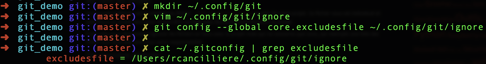Rewrite history
Clean local history before pushing
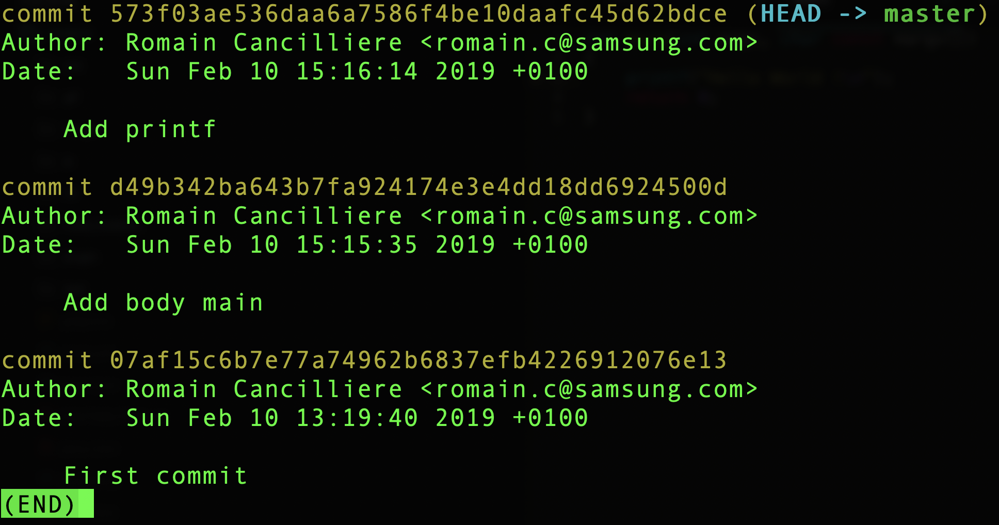Here comes interactive rebase !
Example
Let's melt the two recent commits into one and reword it
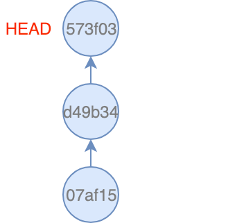TADA !
Add/Checkout with patch option
Add specific lines with the option Patch
Example
We have a file poem.txt with two unfinished couplets
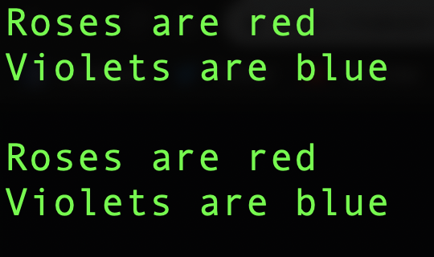After modifications, we want to commit only the first part
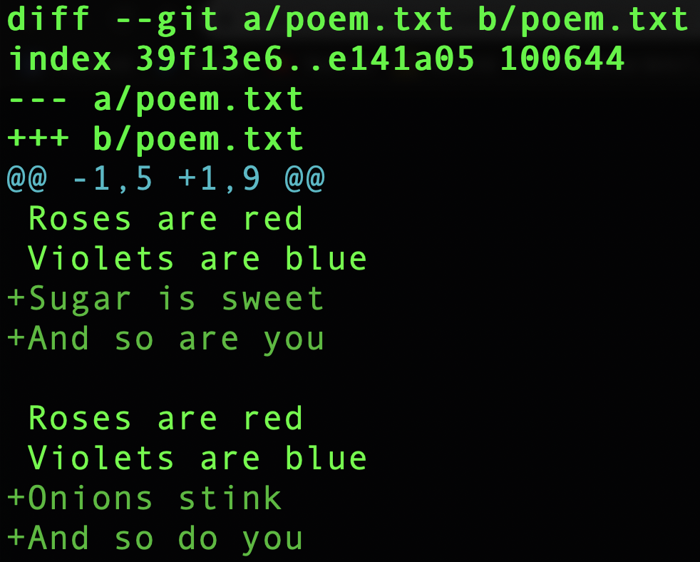We have succeeded to stage only specific lines
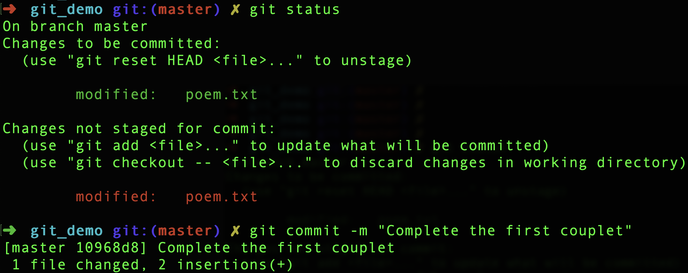Discard specific lines with the option Patch
We want to discard the end of the second couplet
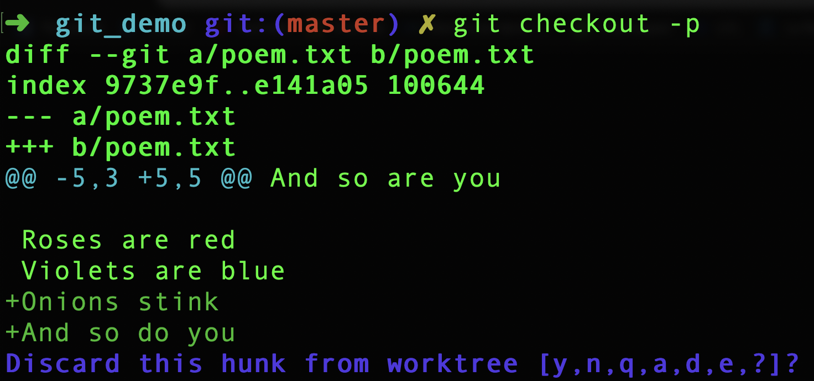We have succeeded to discard specific lines
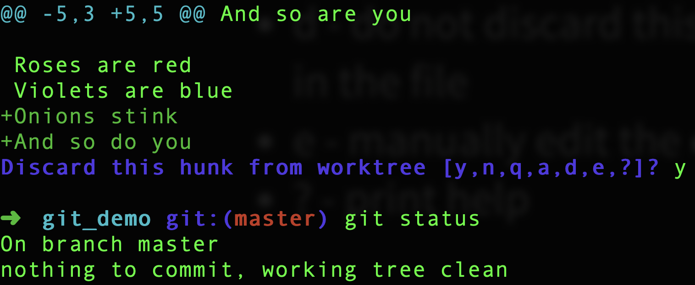Interactive add
Git can help you craft your commits to include only certain combinations and parts of files
Example
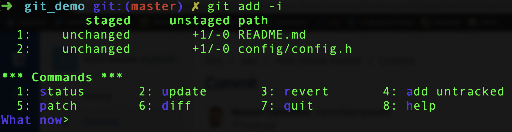The files have been added !
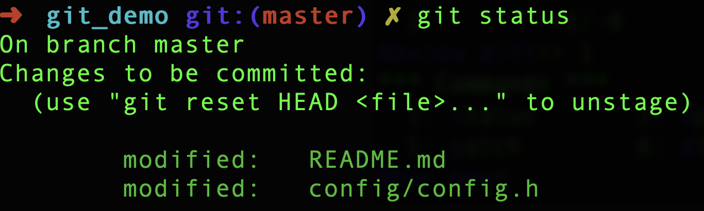Reflog
Reflog records all changes when we modify a branch
Example
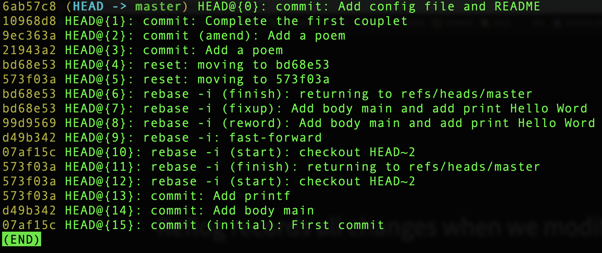In the meantime, we dropped a commit and want to retrieve it. Reflog is our savior !
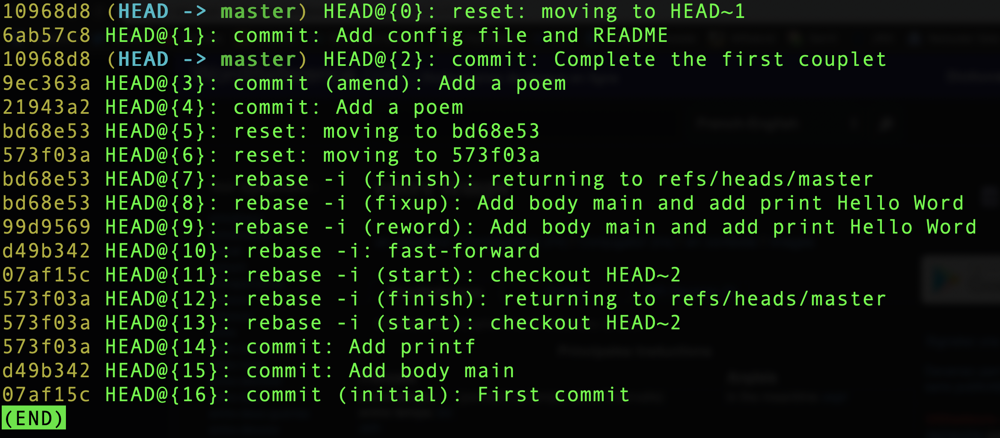For reverting a branch to an earlier state
Reflog helps only for committed work !
Stash
If changes not staged exist, it could be annoying when we want to change branch or to do a pull without doing a commit
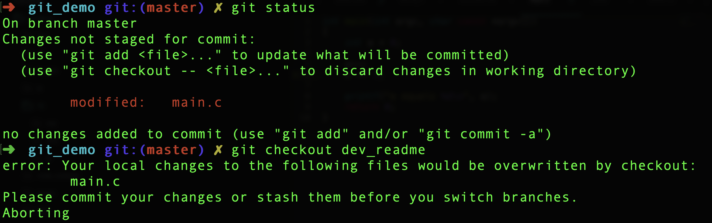Stash for saving your changes !
List all stashed changes

Apply specific stashed changes
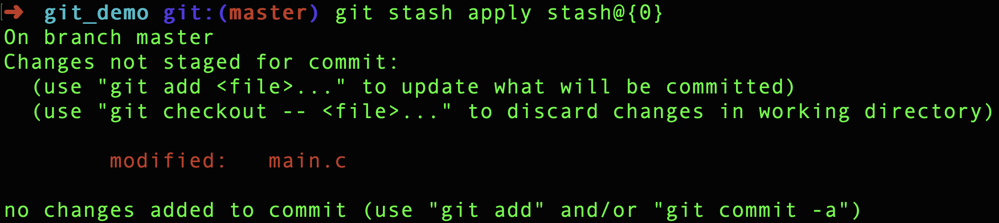Apply the last stashed changes
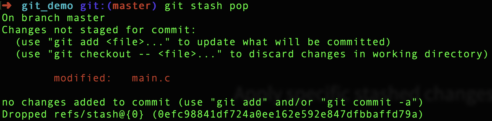Remove all stashed changes
Grep
Search recursively a word/regex in all files from Git repository
Searching the word "int"
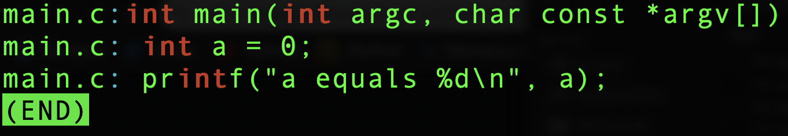Searching the word "int" with the corresponding lines
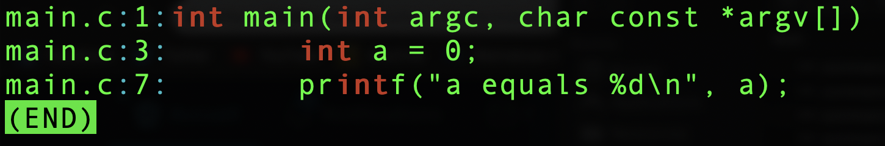Searching with the word "Roses" AND "red"
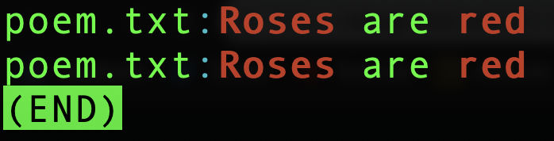Rerere
Rerere (reuse recorded resolution) avoid to resolve a repetitive conflict. Git will remember how the conflict was solved and to solve it automatically in the future
Example
Create hello.txt in master with content:
hello ninjas
Example
We create a branch called "french" with modification of hello.txt:
bonjour ninjas
Example
But in master, there is also a modification:
hello ninjas!
Let's try to merge "french" with master...
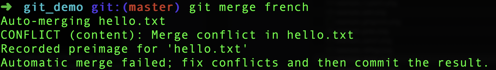We correct the conflict:
bonjour ninjas!
We add the modification and commit. The resolution was recorded
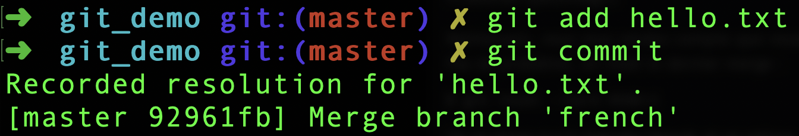A folder was created in .git (rr-cache) which contains a folder corresponding to the resolution with a file containing the conflict (preimage) and a file containing the resolution (postimage)
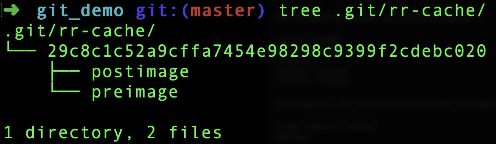Suppose we want to a rebase instead of merging
The conflict was automatically resolved !
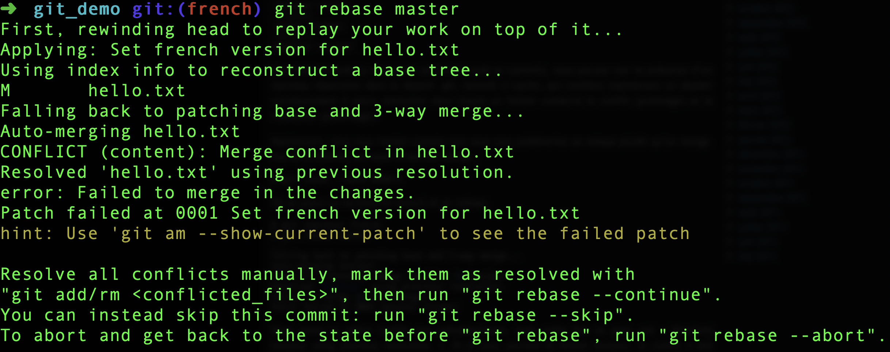If the resolution doesn't satisfy